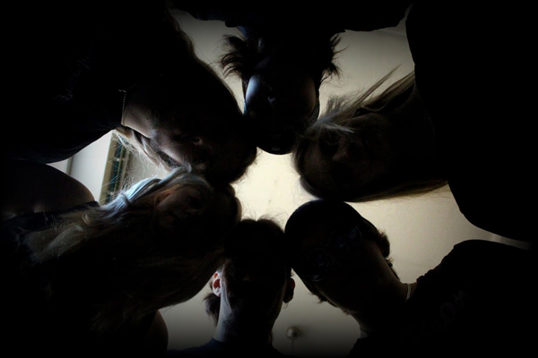

KONSAQUENCE
TO 15.5.2014 // klo 22.00 // MARKS
Konsaquence soittaa rockia 70-luvulta aina tälle vuosituhannelle. Luvassa mm. Deep Purplea, Dioa ja Avenged Sevenfoldia.
Taavi Kiiskinen - laulu
Petra Immonen - koskettimet, viulu, taustalaulu
Toni Manninen - rummut
Visa Forsblom - kitara
Petteri Tuovinen - kitara
Joonas Kaartti - basso, taustalaulu